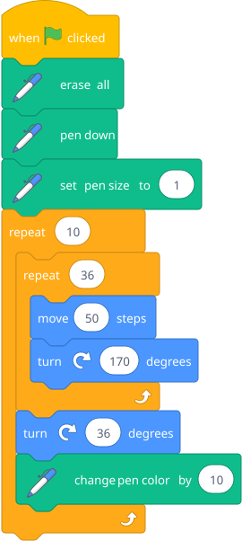
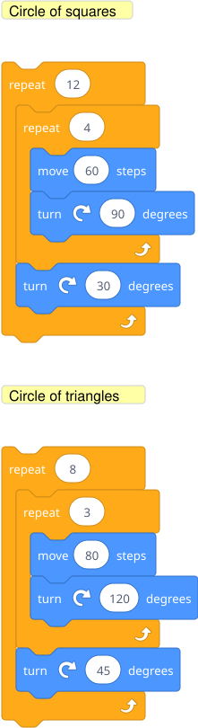

If he's ready: "What happens if you put a loop inside a loop?" Let him predict, then try it.

The inner loop draws a star. The outer loop draws 10 of them, each rotated 36 degrees from the last (360 / 10 = 36). The result is a mandala.
Blocks to point out: The inner repeat (36) runs completely — drawing one full star — before the outer loop turns and starts the next one. This concept (nesting) recurs everywhere in programming.
Let him experiment with different numbers. Some starting points:

The outer repeat count times the outer turn should equal 360 for a complete rotation. That's the only "rule" — everything else is fair game.